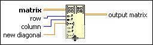

Set Matrix Diagonal Function
Owning Palette: Matrix Functions
Requires: Base Development System
Sets the diagonal of matrix beginning at (row, column).
Add additional row, column, and new diagonal inputs and output matrix outputs by resizing the node.
The connector pane displays the default data types for this polymorphic function.
Details

 Add to the block diagram Add to the block diagram |
 Find on the palette Find on the palette |
 |
matrix must be a 2D array of any numeric type or a real or complex matrix.
|
 |
row must be an integer or real number. row is the starting row index in the output. The default is 0.
|
|
column must be an integer or real number. column is the starting column index in the output. The default is 0.
|
 |
new diagonal can be a real or complex matrix or a 2D array of any numeric type. new diagonal specifies the elements to set.
|
 |
output matrix is the matrix with the new diagonal.
|
If you wire matrix and no other inputs, output matrix returns matrix with the main diagonal set to zero. If you wire column without row, output matrix returns matrix with the upper diagonal starting at (0, column) set to the new diagonal elements. If you wire row without column, output matrix returns matrix with the lower diagonal starting at (row, 0) set to the new diagonal elements.
If you wire a matrix to new diagonal, the matrix must be a column vector with one column or a row vector with one row. If you wire a 2D array to new diagonal, one dimension of the array needs to be equal to 1.
Indexing Outside Input Values
If you wire a negative value to one index input and a positive value to the other index input, output matrix returns an empty matrix or array.
If you wire a negative input to row and no input to column, output matrix returns the same result as if you wired the same positive value to column and left row unwired. If you wire a negative value to column and no input to row, output matrix returns the same result as if you wired the same positive value to row and left column unwired.
If you wire values to row or column that are greater than or equal to the respective row or column dimensions of matrix, matrix resizes to accept the new diagonal elements. If you increase the row or column dimensions of matrix, the function returns 0 at each exterior location.
Wiring the New Diagonal Input
If you wire an empty matrix or a 2D array to new diagonal, output matrix returns matrix.
If you wire new diagonal with an input that contains fewer elements than the diagonal or subdiagonal that starts at (row, column), output matrix returns matrix with only the first elements in the diagonal or subdiagonal set to the new diagonal elements.
If you wire an input to new diagonal that contains more elements than the diagonal or subdiagonal that starts at (row, column), matrix resizes to receive the new diagonal elements.
If you wire an input to new diagonal with a different numeric type than matrix, the function converts matrix to the new numeric type if the function cannot set new diagonal elements without losing precision. If the function can set new diagonal elements without losing precision, the numeric type of new diagonal converts to the numeric type of matrix.
If you wire a real or complex matrix to matrix, output matrix returns a real or complex matrix. The table of special coercion cases shows the situations when output matrix is different from matrix.